Tema 3
Creación de contenidos
Documentos, PDF, licencias y cómo funciona tu equipo.
←→ para moverte · B buscar · P pantalla completa
Basado en el curso «Soy competente digital», de CyL Digital (Junta de Castilla y León), y en la demo del examen de tuCertiCyL. Material no oficial. Licencia CC BY-NC-SA 4.0.
Tema 3
Qué vas a estudiar

Desarrollo de contenidos digitales
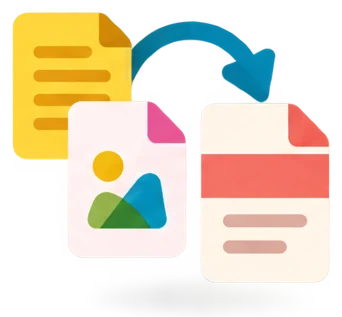
Integración y reelaboración de contenidos digitales
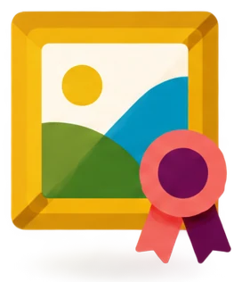
Derechos de autor y licencias
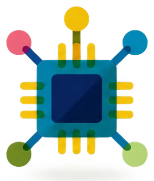
Pensamiento computacional y programación
Tema 3
Qué vas a saber hacer
- Crear y cambiar documentos, hojas de cálculo y presentaciones con Microsoft 365 o LibreOffice.
- Hacer capturas de pantalla en el ordenador y en el móvil.
- Convertir un archivo a PDF.
- Saber qué contenidos de Internet puedes reutilizar y con qué licencia.
- Explicar qué es un dominio y cómo funciona Internet.
- Configurar el wifi y otros ajustes del móvil y del ordenador.
2,5 h
Tiempo para estudiar el tema y hacer todos los ejercicios.
3.1
Desarrollo de contenidos digitales
En el examen: 3 preguntas. En la demo sale un reto: sumar una columna de una hoja de cálculo.
Qué vas a saber hacer
- Reconocer los formatos de archivo más usados: .docx, .xlsx, .pptx, .pdf, .jpg y .mp4.
- Elegir un programa de escritorio o en la nube.
- Crear documentos, hojas de cálculo y presentaciones.
- Usar formatos, tablas, hipervínculos, fórmulas, gráficos e imágenes.
- Hacer fotos y vídeos con el móvil.
- Hacer capturas de pantalla en el ordenador y en el móvil.
3.1 · Desarrollo de contenidos
Formatos de archivo: documentos
El formato de un archivo es la forma en que guarda los datos. Lo indica la extensión: las letras que van después del punto. Por ejemplo, en carta.docx la extensión es .docx.
Texto
- .docxWord. Antes, .doc.
- .odtWriter de LibreOffice.
- .pdfPara leer e imprimir.
- .txtTexto sin formato.
Hoja de cálculo
- .xlsxExcel. Antes, .xls.
- .odsCalc de LibreOffice.
- .csvDatos separados por comas o por punto y coma.
Presentación
- .pptxPowerPoint. Antes, .ppt.
- .odpImpress de LibreOffice.
3.1 · Desarrollo de contenidos
Formatos de archivo: imagen, sonido y vídeo
Imagen
- .jpgFotos. También se escribe .jpeg.
- .pngCapturas de pantalla. Admite fondo transparente.
- .gifAnimaciones cortas.
- .svgImagen vectorial: se amplía sin perder calidad.
- .webpImágenes para la web.
Audio
- .mp3
- .wav
- .ogg
- .m4a
Vídeo
- .mp4
- .mov
- .avi
- .mkv
Comprimido
- .zip
- .rar
- .7z
3.1 · Desarrollo de contenidos
Programas de escritorio y en la nube
De escritorio
- Se instala en el ordenador.
- Funciona sin Internet.
- Los archivos se guardan en el disco.
Ejemplos: Microsoft 365 u Office 2024, de pago (Word, Excel y PowerPoint). LibreOffice, libre y gratuito (Writer, Calc e Impress).
En la nube
- Se usa desde el navegador, con una cuenta. No se instala.
- Necesita Internet. Se actualiza solo.
- Los archivos se guardan en la nube.
- Varias personas pueden editar a la vez.
Ejemplos: Documentos, Hojas de cálculo y Presentaciones de Google. Word, Excel y PowerPoint para la web.
3.1 · Desarrollo de contenidos
El mismo trabajo con tres programas
| Tipo | Microsoft 365 | LibreOffice | Google (en la nube) |
|---|---|---|---|
| Texto | Word (.docx) | Writer (.odt) | Documentos de Google |
| Hoja de cálculo | Excel (.xlsx) | Calc (.ods) | Hojas de cálculo de Google |
| Presentación | PowerPoint (.pptx) | Impress (.odp) | Presentaciones de Google |
- Todos abren y guardan los formatos de los otros.
- LibreOffice es libre y gratuito. Se descarga en es.libreoffice.org.
- Office Online hoy se llama Word, Excel y PowerPoint para la web. Es gratis con una cuenta Microsoft.
3.1 · Desarrollo de contenidos · repaso
Dónde está cada cosa (1)
Consulta esta tabla cuando hagas los retos.
| Tarea | Microsoft 365 | LibreOffice | |
|---|---|---|---|
| Documento nuevo | Archivo › Nuevo › Documento en blanco | Archivo › Nuevo › Documento de texto | Drive › Nuevo › Documentos de Google |
| Formato de letra: negrita, cursiva, tamaño, color | Inicio › grupo Fuente | Barra de formato o Formato › Carácter | Barra de herramientas |
| Tabla | Insertar › Tabla | Tabla › Insertar tabla (Ctrl+F12) | Insertar › Tabla |
| Hipervínculo | Insertar › Vínculo (Ctrl+Alt+K), o clic derecho › Vínculo | Insertar › Hiperenlace (Ctrl+K) | Insertar › Enlace (Ctrl+K) |
3.1 · Desarrollo de contenidos · repaso
Dónde está cada cosa (2)
| Tarea | Microsoft 365 | LibreOffice | |
|---|---|---|---|
| Imagen | Insertar › Imágenes › Este dispositivo | Insertar › Imagen | Insertar › Imagen › Subir desde el ordenador |
| Gráfico | Insertar › Gráficos recomendados | Insertar › Gráfico | Insertar › Gráfico |
| Nueva diapositiva | Inicio › Nueva diapositiva | Diapositiva › Nueva diapositiva | Diapositiva › Nueva diapositiva |
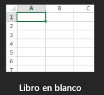
3.1 · Desarrollo de contenidos · repaso
Hoja de cálculo: fórmulas y funciones
Una fórmula es una operación que calcula un resultado. Siempre empieza por el signo =.
Operadores: + suma, - resta, * multiplica, / divide. Ejemplo: =B2*C2
| Función | Qué calcula |
|---|---|
=SUMA(B2:B19) | La suma de las celdas de B2 a B19. |
=PROMEDIO(B2:B13) | La media. |
=CONTAR(B2:B13) | Cuántos números hay. |
=MAX(B2:B13) =MIN(B2:B13) | El número mayor y el menor. En Calc: MÁX y MÍN. |
- Suma
- Promedio
- Contar números
- Máx.
- Mín.
En Excel: Inicio › Autosuma. La flecha da las otras funciones. En Calc, el botón Σ está junto a la barra de fórmulas.
B2:B19 es un rango: las celdas de B2 a B19. Para separar datos se usa punto y coma: =SUMA(B2;D2).
3.1 · Desarrollo de contenidos · repaso
Errores típicos y gráficos
Errores típicos
| Ves… | Significa… |
|---|---|
##### o 9,17E+09 | La columna es estrecha. Haz doble clic en el borde derecho de la letra de la columna. |
#¡DIV/0! | Divides entre cero. |
#¡REF! | La fórmula usa una celda que no es válida o se ha borrado. |
Gráficos
- Selecciona los datos con sus títulos.
- Pulsa Insertar › Gráficos recomendados, o elige un tipo en el grupo Gráficos.
- Elige el gráfico y pulsa Aceptar.
- Circular: las partes de un total.
- Columnas: comparar cantidades.
3.1 · Práctica (no cuenta para el Comprueba)
Reto: un gráfico circular
3.1 · Práctica (no cuenta para el Comprueba)
Solución: así queda el gráfico
Compara tu gráfico con la solución.
- El gráfico tiene el título Transporte al instituto.
- Cada parte lleva su porcentaje: Andando 40 %, Autobús 30 %, Coche 20 % y Bicicleta 10 %.
- La leyenda dice qué color es cada medio.
Después, con el gráfico en edición: Insertar › Etiquetas de datos › Mostrar valor como porcentaje.
3.1 · Práctica (no cuenta para el Comprueba)
Simulación: una imagen en una presentación
3.1 · Desarrollo de contenidos
Capturas de pantalla en el ordenador
Una captura de pantalla es una imagen de lo que se ve en la pantalla en ese momento.
| Teclas en Windows | Qué captura | Dónde va |
|---|---|---|
| Windows + Mayús + S | La parte que eliges con la Herramienta Recortes: rectángulo, ventana, pantalla completa o forma libre. | Al portapapeles. En Windows 11 también se guarda en Imágenes › Capturas de pantalla. |
| Windows + Impr Pant | Toda la pantalla. | Se guarda como archivo PNG en Imágenes › Capturas de pantalla. |
| Impr Pant | Toda la pantalla. En Windows 11 actualizado, abre Recortes, igual que Windows + Mayús + S. | Al portapapeles. Pégala con Ctrl+V en Word o en Paint. |
| Alt + Impr Pant | Solo la ventana activa. | Al portapapeles. |
La tecla Impr Pant puede llamarse ImpPnt o PrtSc. También puedes abrir la app: Inicio › Recortes › Nuevo.
3.1 · Desarrollo de contenidos
Fotos, vídeos y capturas en el móvil
Fotos y vídeos
Usa la app Cámara.
Se guardan en la Galería o en Google Fotos. La carpeta se llama DCIM/Camera.
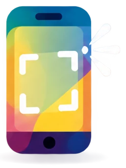
Captura en Android
Pulsa a la vez el botón de encendido y el de bajar volumen.
Se guarda en la Galería o en Google Fotos, en el álbum Capturas de pantalla.
Captura en iPhone
Sin botón de inicio: botón lateral + subir volumen.
Con botón de inicio: botón lateral + botón de inicio.
Se guarda en la app Fotos.
3.1 · Práctica (no cuenta para el Comprueba)
Empareja cada atajo con lo que hace
3.1 · Así lo pregunta el examen · pregunta 10 de la demo
Reto: sumar una columna
Pregunta y archivo de la pregunta 10 de la demo de tuCertiCyL (Junta de Castilla y León).
3.1 · Así lo pregunta el examen · pregunta 10 de la demo
Cómo se resuelve el reto
- Descarga Cuentas.xlsx y ábrelo con Excel.
- Haz clic en B20, la celda verde junto a TOTAL.
- Escribe
=SUMA(B2:B19)y pulsa Intro. También vale el botón Autosuma (Σ). - Si ves
#####o9,17E+09, ensancha la columna B: doble clic en el borde derecho de la letra B. - Sale 9169025229. Compáralo cifra a cifra con las opciones.
| A | B | |
|---|---|---|
| 1 | Empleado | ventas |
| 2 | Juan | 5284 |
| 3 | Pedro | 369841558 |
| 4 | Sara | 36941850 |
| … | … | … |
| 18 | Miguel | 10023 |
| 19 | Marisa | 20123 |
| 20 | TOTAL | 9169025229 |
3.1 · Desarrollo de contenidos
Comprueba lo que has aprendido
3.2
Integración y reelaboración de contenidos digitales
En el examen: 3 preguntas. En la demo: el atajo de teclado para copiar un archivo.
Qué vas a saber hacer
- Explicar la diferencia entre un documento editable y un PDF.
- Convertir un archivo a PDF.
- Abrir, rellenar y convertir un PDF.
- Corregir la ortografía del documento de otra persona.
- Cambiar textos, tablas e imágenes de un documento.
- Copiar, cortar y pegar contenido entre documentos.
3.2 · Integración y reelaboración
Documento editable y PDF
El PDF (Portable Document Format, formato de documento portátil) es un formato que se ve igual en cualquier dispositivo.
Documento editable
- .docx, .odt, .xlsx, .ods, .pptx, .odp
- Se cambia con su programa.
- En otro ordenador puede verse distinto si falta una fuente o cambia la versión del programa.
- Conserva el diseño, las fuentes y las imágenes.
- No está pensado para editarse.
- Se abre con el navegador, con Adobe Acrobat Reader (gratis) o con el visor del móvil.
3.2 · Integración y reelaboración
Convertir un archivo a PDF con Word
- Pulsa Archivo.
- Pulsa Exportar.
- Elige Crear documento PDF/XPS y pulsa el botón Crear PDF/XPS.
- Elige la carpeta y el nombre.
- Pulsa Publicar.
Es igual en Excel y en PowerPoint. Otra forma: Archivo › Guardar como › Examinar, y en Tipo eliges PDF (*.pdf). Si el archivo está en OneDrive, sale «Guardar una copia».
3.2 · Integración y reelaboración
Otras formas de crear un PDF
LibreOffice
También puedes usar el botón Exportar a PDF de la barra de herramientas.
Documentos de Google
El PDF se guarda en la carpeta Descargas.
Desde cualquier programa
- Pulsa Imprimir (Ctrl+P).
- Elige la impresora Microsoft Print to PDF.
- Pulsa Imprimir y elige el nombre y la carpeta.
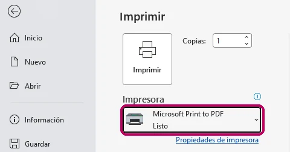
3.2 · Integración y reelaboración
Trabajar con un PDF
| Qué quieres hacer | Cómo |
|---|---|
| Abrir y leer | Con el navegador (Edge, Chrome, Firefox), con Adobe Acrobat Reader o con el visor del móvil. |
| Rellenar un formulario | Escribe en los campos con el navegador o con Acrobat Reader. Después guárdalo. |
| Editar el texto | Word abre el PDF y lo convierte en un documento editable (Archivo › Abrir). El diseño puede cambiar. LibreOffice Draw también lo abre. Adobe Acrobat, de pago, lo edita directamente. |
| Unir, dividir, comprimir o convertir | Webs gratuitas, con límites de uso: iLovePDF (ilovepdf.com) y Smallpdf (smallpdf.com). Convierten un PDF a Word o a JPG, y al revés. |
3.2 · Integración y reelaboración · repaso
Corrige la ortografía y cambia palabras
Ortografía
- Subrayado rojo: palabra mal escrita.
- Subrayado azul o doble: posible error de gramática.
- Haz clic derecho en la palabra y elige la sugerencia.
- Revisión completa: F7. En Word, Revisar › Ortografía y gramática. En Writer, Herramientas › Ortografía.
- Idioma del corrector: Revisar › Idioma › Establecer idioma de corrección. En Writer, Herramientas › Idioma.
Cambiar una palabra en todo el texto
- Pulsa Inicio › Reemplazar (Ctrl+L en Word en español). En Writer: Editar › Buscar y reemplazar (Ctrl+H).
- Escribe la palabra que buscas y la palabra nueva.
- Pulsa Reemplazar todo. El programa te dice cuántos cambios ha hecho.
3.2 · Integración y reelaboración · repaso
Cambia tablas e imágenes
| Tarea | Word | Writer |
|---|---|---|
| Añadir una fila a una tabla | Clic derecho en una celda › Insertar › Insertar filas debajo | Tabla › Insertar › Filas debajo |
| Cambiar una imagen por otra | Clic derecho › Cambiar imagen | Clic derecho › Reemplazar |
| Colocar la imagen respecto al texto | Formato de imagen › Ajustar texto | Clic derecho › Ajuste |
3.2 · Integración y reelaboración
Copiar, cortar, pegar y deshacer
Funcionan igual con archivos (en el Explorador) y con textos, celdas o imágenes (en cualquier programa).
| Atajo | Qué hace |
|---|---|
| Ctrl + C | Copiar. El original se queda donde estaba. |
| Ctrl + X | Cortar. El original se quita al pegar. Sirve para mover. |
| Ctrl + V | Pegar lo que has copiado o cortado. |
| Ctrl + Z | Deshacer el último cambio. |
| Ctrl + Y | Rehacer lo que has deshecho. |
Con el ratón: clic derecho › Copiar, Cortar o Pegar.
Pegado especial
- Sin el formato de origen. Word: Inicio › Pegar (flecha) › Mantener solo texto. Writer: Editar › Pegado especial › Pegar texto sin formato.
- Solo los resultados, sin fórmulas. Excel: Inicio › Pegar (flecha) › Pegar valores.
- Integrar contenidos: copia un gráfico de Excel y pégalo en Word o en PowerPoint.
3.2 · Práctica (no cuenta para el Comprueba)
Reto: corrige el documento de otra persona
3.2 · Práctica (no cuenta para el Comprueba)
Termina el documento y compara
Sigue con el mismo documento
- Corrige las otras 3 faltas con el corrector: clic derecho en la palabra subrayada.
- Añade al final de la tabla la fila «18:00 · Vuelta al instituto».
- Pon un hipervínculo en la palabra «autorización» del último párrafo. Que lleve a https://www.educa.jcyl.es.
- Guárdalo como PDF: Archivo › Exportar › Crear PDF/XPS › Publicar.
Excursión a Valladolid
El viernes 14 de mayo de 2027 vamos de excursión a Valladolid con los grupos de 1.º de SMR.
Salimos a las 8:30 desde la puerta del instituto. El autobús llega a Valladolid a las 10:00.
En Valladolid visitamos el Museo de la Ciencia y comemos en el parque Campo Grande.
Trae en la mochila comida, agua, gorra y la autorización firmada. Sin autorización no puedes ir a Valladolid.
| Hora | Actividad |
| 8:30 | Salida del instituto |
| 10:00 | Llegada a Valladolid |
| 10:30 | Museo de la Ciencia |
| 14:00 | Comida en Campo Grande |
| 18:00 | Vuelta al instituto |
3.2 · Así lo pregunta el examen · pregunta 12 de la demo
Copiar un archivo
Pregunta 12 de la demo de tuCertiCyL (Junta de Castilla y León).
3.2 · Integración y reelaboración
Comprueba lo que has aprendido
3.3
Derechos de autor y licencias
En el examen: 3 preguntas. En la demo: qué imágenes no puedes reutilizar.
Qué vas a saber hacer
- Saber que muchos contenidos de Internet tienen derechos de autor.
- Diferenciar el uso comercial del no comercial.
- Reconocer las licencias copyright, Creative Commons, CC0, dominio público y copyleft, y sus iconos.
- Buscar contenidos que puedes reutilizar y citarlos.
- Explicar las consecuencias de descargar contenidos de forma ilegal.
3.3 · Derechos de autor y licencias
Derechos de autor
La propiedad intelectual es el conjunto de derechos que tiene el autor sobre su obra.
- Nace al crear la obra. No hace falta registrarla.
- Protege textos, fotos, música, vídeos, dibujos y programas.
- En España la regula la Ley de Propiedad Intelectual.
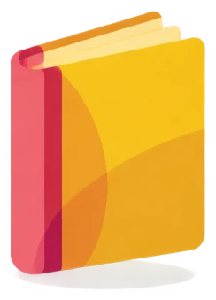
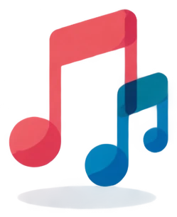
3.3 · Derechos de autor y licencias
Dos tipos de derechos
Derechos morales
Que se reconozca quién es el autor de la obra.
No se venden ni se pierden.
Derechos de explotación
Copiar, distribuir, mostrar en público y transformar la obra.
El autor decide quién lo hace y puede cobrar por ello.
+70
Los derechos de explotación duran toda la vida del autor y 70 años más.
Después, la obra pasa a dominio público: todo el mundo puede usarla. Por ejemplo, El Quijote o Las Meninas.
3.3 · Derechos de autor y licencias
Uso comercial y uso no comercial
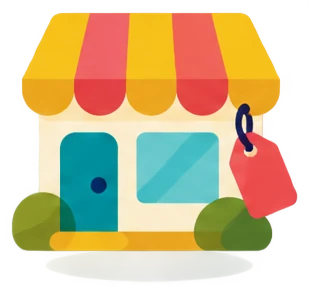
Uso comercial
Uso comercial es usar una obra para ganar dinero o para anunciar un negocio.
- El anuncio de una tienda en Instagram.
- Camisetas o tazas con una foto, para venderlas.
- La portada de un libro que se vende.
- La web de una empresa.
- El cartel de un concierto con entrada de pago.
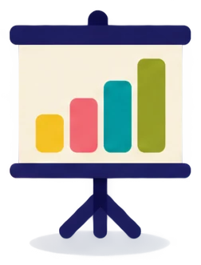
Uso no comercial
Uso no comercial es usar la obra sin ganar dinero con ella.
- Un trabajo de clase.
- Una presentación en el instituto.
- Un blog personal sin publicidad.
- Una felicitación de cumpleaños.
- El cartel de una charla gratuita.
3.3 · Derechos de autor y licencias
Piensa: ¿es uso comercial?
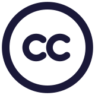
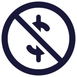
BY-NCVendes camisetas con una foto que tiene la licencia CC BY-NC. El dinero es para pagar el viaje de fin de curso. ¿Es uso comercial?
Sí, es uso comercial. Ganas dinero con las camisetas, aunque sea para el viaje.
La licencia NC no lo permite.
Necesitas el permiso del autor o una foto con licencia CC BY, CC BY-SA o CC0.
3.3 · Derechos de autor y licencias
Formas de licenciar una obra
| Licencia | Símbolo | Qué significa | Ejemplo |
|---|---|---|---|
| Copyright | 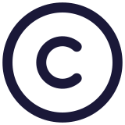 | Todos los derechos reservados. Necesitas permiso del autor para copiar, compartir o modificar. Es lo que tiene cualquier obra que no indica licencia. | Una canción de un artista. Una foto de un periódico. |
| Creative Commons | Algunos derechos reservados. El autor permite algunos usos, con condiciones. | Muchas fotos de Wikimedia Commons. | |
| CC0 | 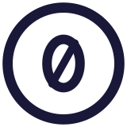 | Sin derechos reservados. El autor renuncia a ellos. Puedes usar la obra para lo que quieras, sin citar. | Fotos de algunos bancos de imágenes. |
| Dominio público | Obras cuyos derechos han caducado. | El Quijote. Las Meninas. | |
| Copyleft | Puedes usar, copiar, modificar y compartir. Lo que hagas con la obra debe llevar la misma licencia libre. | Wikipedia (CC BY-SA). Programas con licencia GNU GPL, como GIMP. |
Estas son licencias de contenidos: textos, fotos, música y vídeos. Las licencias de los programas están en la diapositiva «Licencias de software».
3.3 · Derechos de autor y licencias
Las 4 condiciones de Creative Commons
Cada licencia Creative Commons junta varias condiciones. Cada condición tiene un icono.
BY · Atribución
También se llama Reconocimiento.
Tienes que citar al autor.
NC · No comercial
No puedes ganar dinero con la obra.
ND · Sin obra derivada
Puedes compartirla, pero sin cambiarla: no recortar, no poner filtros, no traducir.
SA · Compartir igual
Puedes cambiarla, pero lo nuevo debe llevar la misma licencia.
3.3 · Derechos de autor y licencias
Las 6 licencias Creative Commons
| Licencia, de más abierta a más cerrada | ¿Citar al autor? | ¿Uso comercial? | ¿Modificar? | Además |
|---|---|---|---|---|
| BY | Sí | Sí | Sí | — |
| BY-SA | Sí | Sí | Sí | Lo nuevo, con la misma licencia |
| BY-NC | Sí | No | Sí | — |
| BY-NC-SA | Sí | No | Sí | Lo nuevo, con la misma licencia |
| BY-ND | Sí | Sí | No | — |
| BY-NC-ND | Sí | No | No | — |
- Todas llevan BY. ND y SA no van juntas: si no puedes modificar la obra, no hay obra nueva que compartir.
- La versión actual es la 4.0. Este curso tiene la licencia CC BY-NC-SA 4.0.
3.3 · Derechos de autor y licencias
Piensa: lee la licencia
Licencia de una foto
Una foto tiene esta licencia. ¿Qué puedes hacer con ella?
Puedes usarla, compartirla y modificarla.
Tienes que citar al autor (BY).
No puedes ganar dinero con ella (NC).
Sí puedes usarla en un trabajo de clase. No puedes usarla en el cartel de una tienda.
3.3 · Derechos de autor y licencias
Busca contenido que puedes reutilizar
- En Google Imágenes, busca lo que necesitas.
- Pulsa Herramientas › Derechos de uso › Licencias Creative Commons. En la captura está elegida la otra opción: «Licencias comerciales y otras licencias».
- Abre la imagen en su web de origen y lee la licencia exacta.
- Cítala: título, autor, fuente y licencia.
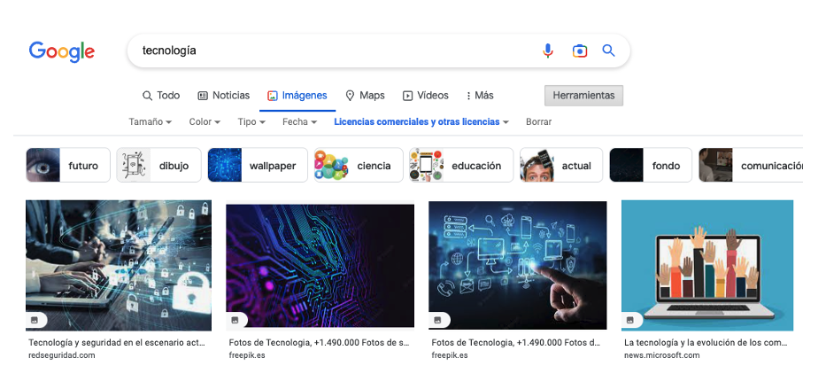
3.3 · Derechos de autor y licencias
Dónde buscar contenidos con licencia
Wikimedia Commons
commons.wikimedia.org
Fotos, dibujos, sonidos y vídeos. Cada archivo indica su licencia.
Openverse
openverse.org
Un buscador de obras con licencias abiertas.
Pixabay y Pexels
Fotos y vídeos con licencia propia: uso gratuito, también comercial, sin obligación de citar. No permite vender la foto sin cambios, por ejemplo en una camiseta.
Biblioteca de audio de YouTube
Música y efectos de sonido para tus vídeos.
Jamendo
Música con licencias Creative Commons.
Si no ves la licencia
Busca el Aviso legal en el pie de la web. Si no hay licencia, la obra tiene todos los derechos reservados.
3.3 · Derechos de autor y licencias
Descargar contenidos de forma ilegal
Descargar de forma ilegal es bajar música, películas, libros, juegos o programas sin permiso de sus autores.
Consecuencias éticas
- Los autores no cobran por su trabajo: músicos, actores, escritores, programadores.
- Se pierden empleos.
- Es injusto con quien paga.
Consecuencias legales
- Va contra la Ley de Propiedad Intelectual. El autor puede reclamar una indemnización.
- Las webs piratas se cierran o se bloquean.
- Compartir o vender copias piratas para ganar dinero es delito. Se castiga con cárcel de 6 meses a 4 años y multa (Código Penal, artículo 270).
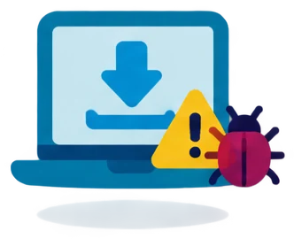
3.3 · Derechos de autor y licencias
Riesgos para tu equipo y alternativas legales
Riesgos para tu equipo
- Los programas pirata y los «cracks» suelen llevar malware.
- Las webs piratas tienen anuncios engañosos.
- El software pirata no recibe actualizaciones de seguridad (lo verás en el Tema 4).
Alternativas legales
- Plataformas de música y vídeo: Spotify, YouTube y RTVE Play, gratis.
- eBiblio Castilla y León: libros electrónicos gratis con el carné de biblioteca.
- Software libre: LibreOffice, GIMP.
3.3 · Derechos de autor y licencias · repaso
Licencias de software
Un repaso rápido de las licencias de los programas:
Código cerradoNo puedes ver ni cambiar el código.
Código abiertoPuedes ver y cambiar el código.
Gratis
Freeware
Es gratis, pero es propietario.
WhatsApp, Adobe Acrobat Reader
Freemium
Es gratis, con funciones de pago.
Canva, Spotify
Libre y código abierto
Libre: puedes usarlo, estudiarlo, compartirlo y mejorarlo. Código abierto: puedes ver el código. Para el usuario es casi lo mismo. Los programas libres también son de código abierto.
LibreOffice, GIMP, Firefox, VLC
De pago
Propietario de pago
No puedes ver ni cambiar el código. Pagas por usarlo.
Windows, Microsoft Office
Libre y de pago
Existe, pero es poco habitual. Libre no significa gratis. Significa libertad para usar, estudiar, compartir y mejorar el programa.
3.3 · Así lo pregunta el examen · pregunta 11 de la demo
Imágenes que no puedes reutilizar
Imágenes de la pregunta 11 de la demo de tuCertiCyL (Junta de Castilla y León).
3.3 · Derechos de autor y licencias
Comprueba lo que has aprendido
3.4
Pensamiento computacional y programación
En el examen: 3 preguntas. La demo no tiene pregunta de esta competencia.
Qué vas a saber hacer
- Distinguir el hardware y el software de un ordenador o un móvil.
- Explicar cómo llega una página web a tu pantalla.
- Explicar qué es un dominio y reconocerlo en una dirección.
- Configurar el wifi, el Bluetooth, el brillo, el sonido y el idioma del móvil y del ordenador.
El nombre de la competencia es el oficial. En el nivel básico no se programa.
3.4 · Pensamiento computacional · repaso
Hardware: las partes físicas
El hardware son las partes físicas del equipo: las que puedes tocar.
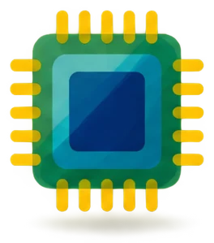
Procesador o CPU
Ejecuta las instrucciones de los programas.
Memoria RAM
Guarda lo que estás usando. Se borra al apagar.
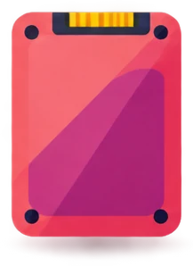
Almacenamiento
Disco duro, SSD o memoria del móvil. Guarda los archivos aunque apagues.
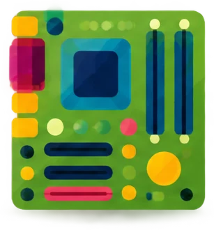
Placa base
Une todas las piezas del equipo.
PERIFÉRICOS: LOS APARATOS QUE SE CONECTAN AL EQUIPO
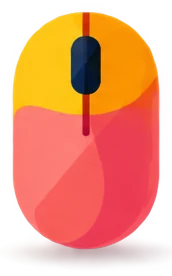
De entrada
Teclado, ratón, micrófono, cámara web y escáner.
De salida
Monitor, impresora y altavoces.
De entrada y salida
Pantalla táctil e impresora multifunción (imprime y escanea).
3.4 · Pensamiento computacional · repaso
Software: los programas
El software son los programas: las instrucciones que dicen al hardware qué hacer.
| Tipo | Ejemplos |
|---|---|
| De sistema: el sistema operativo y los controladores | Windows, macOS, Linux, Android, iOS |
| De aplicación: programas para hacer tareas | Word, Chrome, WhatsApp |
| Firmware: programa grabado en el propio aparato | La BIOS o UEFI del ordenador |
En el móvil
Hardware: procesador, RAM, almacenamiento, pantalla táctil, cámaras, batería y tarjeta SIM.
Software: el sistema operativo (Android o iOS) y las apps.
3.4 · Pensamiento computacional · repaso
Cómo llega una web a tu pantalla
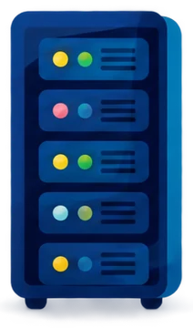
Servidor webguarda la páginaInternet es la red de redes: une millones de redes y dispositivos de todo el mundo.
Cliente y servidor
Tu navegador es el cliente: pide la página.
El servidor web es el ordenador que guarda la página y la envía.
3.4 · Pensamiento computacional · repaso
Dirección IP, DNS y HTTPS
Dirección IP: es el número que identifica a cada dispositivo conectado. En una red de casa, por ejemplo, 192.168.1.10.
DNS (Sistema de Nombres de Dominio): traduce el nombre de dominio a la dirección IP del servidor.
HTTPS: un protocolo es un conjunto de reglas para comunicarse. HTTP es el protocolo de las webs. La S indica que la conexión va cifrada: el navegador muestra un candado.
Internet empezó en 1983, cuando la red ARPANET adoptó el protocolo TCP/IP.
3.4 · Pensamiento computacional
Qué es un dominio
Un dominio es el nombre fácil de recordar que identifica un sitio en Internet, como jcyl.es. Así no tienes que escribir la dirección IP del servidor.
dominio: tucerticyl.es
En una dirección web, el subdominio (www, es…) no forma parte del dominio. En un correo electrónico, el dominio es todo lo que va detrás de la @, también el subdominio: nombre@educa.jcyl.es
3.4 · Pensamiento computacional
Extensiones de dominio
La extensión (o dominio de primer nivel) es la parte final del dominio, después del último punto.
De un territorio
.esEspaña.frFrancia.ptPortugal.euUnión Europea
Genéricas
.comempresas.orgorganizaciones.netredes.infoinformación
Administración
En España, la Administración del Estado usa dominios que terminan en .gob.es. Su extensión es .es.
Ejemplo: lamoncloa.gob.es
- Cada dominio es único: no puede haber dos iguales.
- Se alquila por años a una empresa llamada registrador.
- Los dominios .es los gestiona Red.es (dominios.es).
3.4 · Pensamiento computacional
Piensa: ¿cuál es el dominio?
Señala el dominio en estas tres direcciones:
rae.es. «www» es un subdominio: no forma parte del dominio.
educa.jcyl.es. Es un correo: el dominio es todo lo que va detrás de la @. Incluye el subdominio «educa».
wikipedia.org. «es» es un subdominio: indica la versión en español.
La ruta (/diccionario, /wiki/Burgos) no es parte del dominio.
3.4 · Pensamiento computacional
Configura el móvil Android
Abre la app Ajustes (el engranaje) o los ajustes rápidos: desliza el dedo desde arriba.
| Qué | Dónde, en Ajustes |
|---|---|
| Wifi | Redes e Internet › Internet |
| Datos móviles y Modo avión | Redes e Internet |
| Bluetooth | Dispositivos conectados |
| Brillo, tema oscuro y tamaño de letra | Pantalla |
| Volumen, tono y No molestar | Sonido y vibración |
| Idioma | Sistema › Idiomas |
| Fondo de pantalla | Fondo de pantalla y estilo |
Los nombres cambian según la marca. En Samsung, el wifi está en Conexiones.
3.4 · Pensamiento computacional
Configura el ordenador con Windows 11
Abre Configuración: Windows + I.
| Qué | Dónde, en Configuración |
|---|---|
| Wifi | Red e Internet › Wi-Fi |
| Bluetooth | Bluetooth y dispositivos |
| Brillo y tamaño del texto | Sistema › Pantalla |
| Volumen | Sistema › Sonido |
| Fondo y modo oscuro | Personalización |
| Idioma | Hora e idioma › Idioma y región |
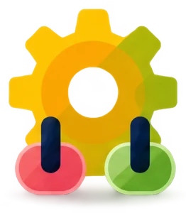
Configuración rápida
Pulsa Windows + A, o haz clic en los iconos de red y volumen de la barra de tareas.
Tienes wifi, Bluetooth, modo avión, brillo y volumen.
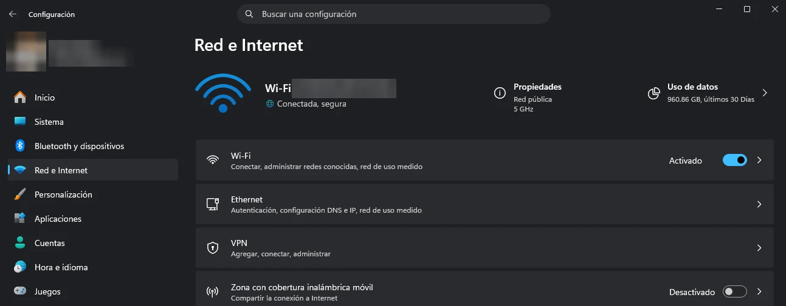
3.4 · Así lo pregunta el examen · pregunta propia (la demo no tiene pregunta de la 3.4)
Qué es un dominio
3.4 · Pensamiento computacional
Comprueba lo que has aprendido
Repaso del área 3
Resumen del tema
3.1 Desarrollo
- Formatos: .docx y .odt, .xlsx y .ods, .pptx y .odp, .pdf, .jpg, .png, .mp4.
- Escritorio (Microsoft 365, LibreOffice) y nube (Google, Office para la web).
- =SUMA y =PROMEDIO.
- Capturas: Windows + Mayús + S; encendido + bajar volumen.
3.2 Integración
- El PDF se ve igual en todas partes y no se edita.
- Archivo › Exportar (Office). Exportar a PDF (LibreOffice).
- Ctrl+C copia, Ctrl+X corta, Ctrl+V pega, Ctrl+Z deshace.
3.3 Licencias
- Sin licencia = todos los derechos reservados.
- Comercial = ganar dinero.
- ©, CC (BY, NC, ND, SA), CC0, dominio público, copyleft.
- Descargar pirata es ilegal y peligroso.
3.4 Tu equipo
- Hardware y software.
- Red de redes, IP y DNS.
- Dominio de una web = nombre + extensión (.es). En un correo: lo que va detrás de la @.
- Ajustes del móvil y Configuración de Windows.
Repaso del área 3 · preguntas del curso «Soy competente digital», CyL Digital
Test de repaso
Repaso del área 3
Recursos
- Vídeo de presentación del módulo 3 de CyL Digital: youtube.com/watch?v=fX9ysbjXvko
- Licencias Creative Commons en español: creativecommons.org/licenses
- Openverse: openverse.org
- Wikimedia Commons: commons.wikimedia.org
- LibreOffice: es.libreoffice.org
- Dominios .es: dominios.es
- Demo del examen: tucerticyl.es/demo
Fin del tema 3
Creación de contenidos
3.1
Desarrollo de contenidos digitales
3.2
Integración y reelaboración
3.3
Derechos de autor y licencias
3.4
Pensamiento computacional y programación
Si te falta alguna competencia, vuelve a su Comprueba y repítelo hasta acertar las 3 preguntas.
Basado en el curso «Soy competente digital», de CyL Digital (Junta de Castilla y León), CC BY-NC. Preguntas 10 a 12 de la demo de tuCertiCyL. Ilustraciones y fotos de las simulaciones: generadas para este curso. Curso: CC BY-NC-SA 4.0.